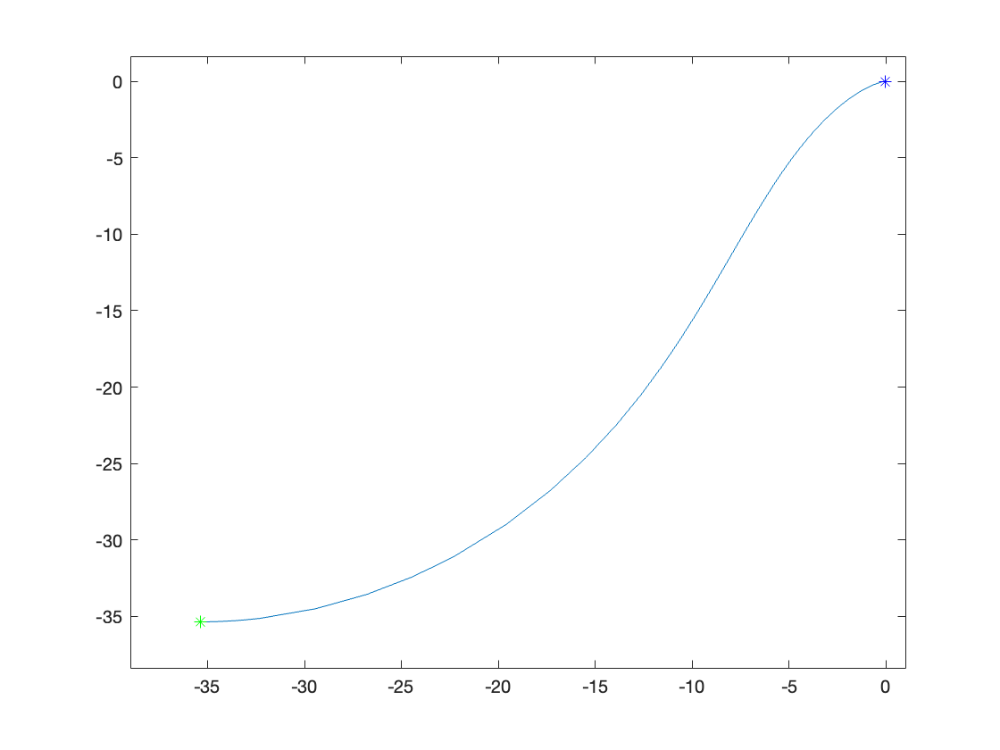

The aim of this lab was to simulate a differential drive mobile robot using matlab. The robot had a goal position and our goal was to generate a smooth trajectory to the goal. The robot was modeled using a set of ordinary differential equations (ODEs) and the control law was based on three error components.
We model the robot's dynamics using the following set of ordinary differential equations (ODEs):
$$ \begin{aligned} \dot{x} &= v \cos(\theta) \ \dot{y} &= v \sin(\theta) \ \dot{\theta} &= \omega \end{aligned} $$
Where $v$ and $\omega$ are the linear and angular velocities, respectively, and $\theta$ is the robot's heading.
The control law for the robot is based on three error components:
The control law is formulated as:
$$ \begin{aligned} v &= k_p*\rho \ \omega &= k_{\alpha}\alpha + k_{\beta}\beta \end{aligned} $$
Where $k_p$, $k_{\alpha}$, and $k_{\beta}$ are the proportional gains for the three error components.
The Matlab code starts by setting the initial position of the robot based on $ r $ and $ \text{angle} $. The code uses Matlab's ode45 function to solve the system of ODEs over the time span specified. The code then plots the trajectory.

The experiment successfully simulates the path of a differential drive robot moving from an initial position on a circle to a goal position at the center of the circle. The control law effectively guides the robot along a smooth path to the goal.